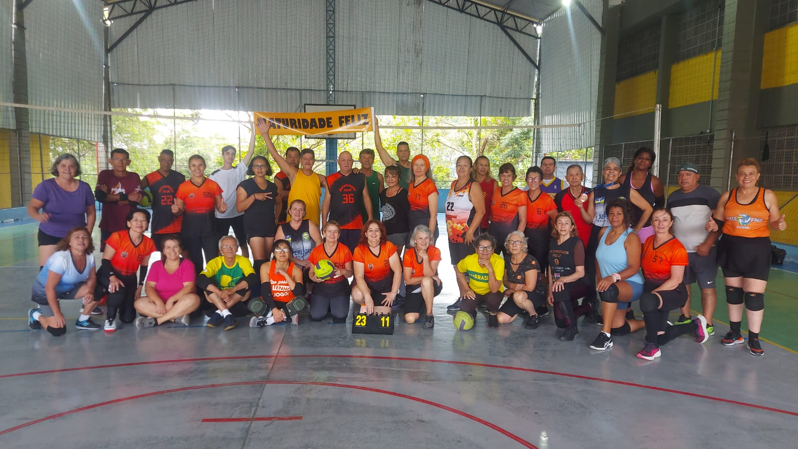
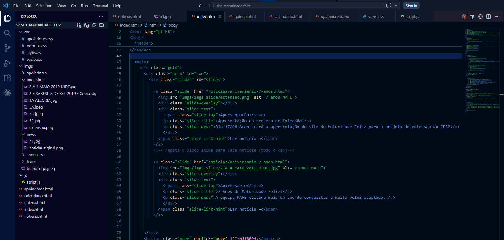

Estudantes de ADS Apresentam Projetos de Extensão
Entre os trabalhos expostos, destaca-se o desenvolvimento da plataforma web para o grupo de vôlei adaptado "Maturidade Feliz".
O projeto social MAFE (Maturidade Feliz) atua de forma independente desde 16 de março de 2019 na cidade de Mairiporã-SP. Conduzido pelas idealizadoras Ângela e Neusa por meio do programa Escola da Família, a iniciativa promove treinos semanais e competições de vôlei adaptado para um público estimado em 60 pessoas com idades entre 45 e 75 anos.
Durante a análise feita pelo grupo em busca de formas de melhorar o projeto, identificou-se a oportunidade de centralizar a divulgação de informações como a agenda de treinos, fotos dos eventos e comunicados gerais. O desenvolvimento deste site oficial visa criar um canal centralizado e de fácil acesso, otimizando a comunicação tanto para os atletas atuais quanto para novos integrantes interessados em conhecer o vôlei adaptado.

Desenvolvimento focado na infraestrutura do MAFE.Metodologia Utilizada
Para a construção da plataforma, foram aplicados conceitos fundamentais de front-end utilizando HTML5 para a estruturação lógica do conteúdo, CSS3 para a identidade visual (trabalhando com contrastes nítidos e fontes escaláveis para garantir boa legibilidade) e JavaScript para a inserção de interatividades básicas na tela, como o controle de abas dinâmicas e menus responsivos.
A interface foi planejada para se adequar tanto a computadores quanto a dispositivos móveis (mobile-first), visando uma navegação intuitiva e simplificada que atenda às características do público-alvo da terceira idade.
A elaboração deste site demonstra como a aplicação prática das disciplinas de desenvolvimento web pode colaborar diretamente com a organização e o fortalecimento de iniciativas comunitárias que promovem a saúde e o esporte local.

Design intuitivo e adaptado para dispositivos móveis e desktops.